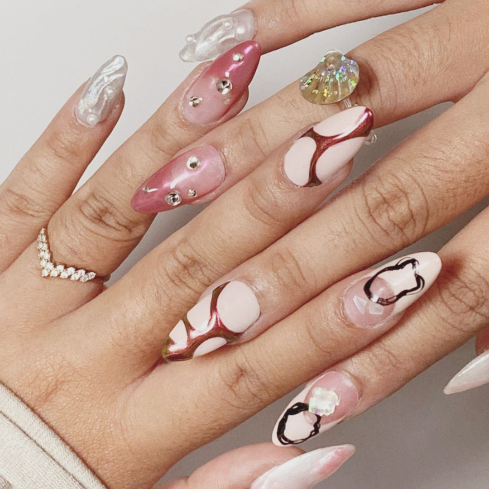
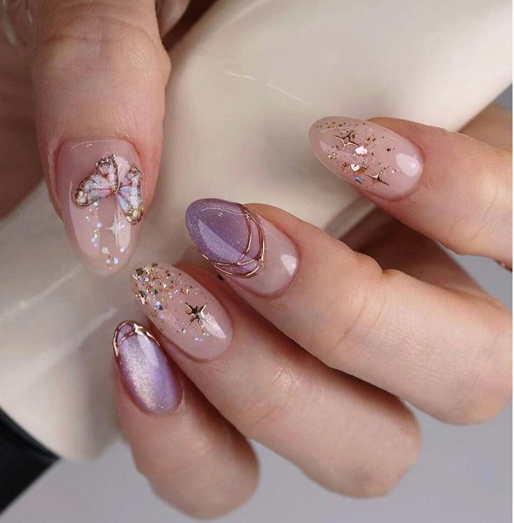

About
GET TO KNOW WHAT NAILART IS!
Nail art adalah seni menghias kuku dengan berbagai teknik, seperti cat kuku, desain grafis, dan elemen 3D, untuk menciptakan tampilan yang unik dan menarik. Populer di kalangan wanita, nail art memungkinkan individu mengekspresikan kreativitas dan kepribadian melalui berbagai gaya, dari yang sederhana hingga yang kompleks. Selain menggunakan berbagai alat dan bahan, perawatan kuku setelah nail art juga penting untuk menjaga keindahan dan daya tahan desain
Dalam nail art, teknik yang umum digunakan termasuk ombré, nail stamping, dan penggunaan glitter, yang semua dapat menciptakan efek visual yang menakjubkan. Penggunaan stiker dan stensil juga memudahkan untuk menghasilkan desain yang rumit tanpa memerlukan keterampilan lukis tangan yang tinggi. Ketersediaan berbagai warna dan tekstur cat kuku memberi para penggemar banyak pilihan untuk bereksperimen dan menciptakan kombinasi yang sesuai dengan gaya pribadi mereka.
Penting untuk memperhatikan perawatan kuku setelah melakukan nail art. Menggunakan top coat dapat melindungi desain dan memberikan tampilan berkilau yang lebih lama. Selain itu, menjaga kelembapan kuku dengan krim atau minyak kutikula membantu mencegah kuku menjadi kering atau rapuh, sehingga nail art dapat bertahan lebih lama dan tetap terlihat menarik.
Reason why you should get a Nailart?

- Perkembangan nailart dari masa ke masa tidak pernah mati.
- Nailart sudah melekat dikehidupan manusia terutama “PEREMPUAN"
- Menjadi ritual atau kebutuhan sekunder bagi sebagian orang.
Advantages of NAILSHOW nail artist!

- Kami memiliki kreatifitas
- Details (teliti)
- Rapih dan cepat tanggap
- Kami memiliki problem solving skills
- Fokus dan talkative